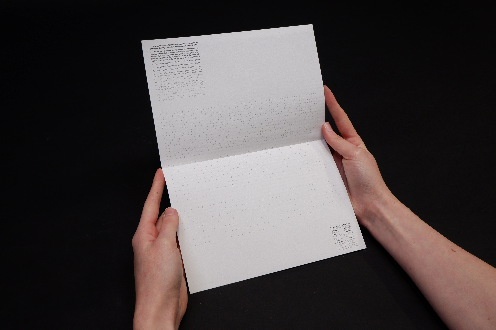
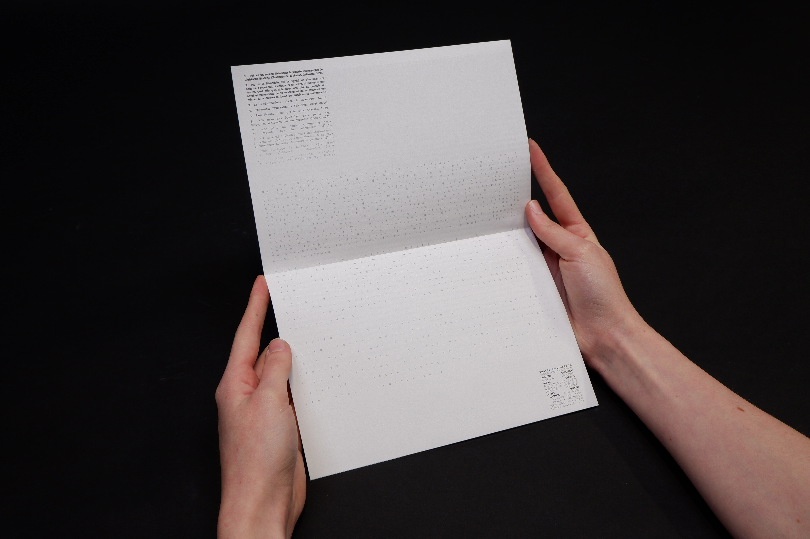

CO
Tracts
Réalisation d’une mise en page d'un tract de crise par Gallimard en détournant de manière innovante et pertinente les outils d’Indesign. Dans ce texte intitulé Ralentir, Gaspard Kœnig revient sur le rythme de la vie qui a été poussé à ralentir face au confinement du Covid-19. J'ai alors retranscrit le message à travers la mise en page et ses étapes de lecture.
Expérimentations
2023


 
Version n°2

Version n°2